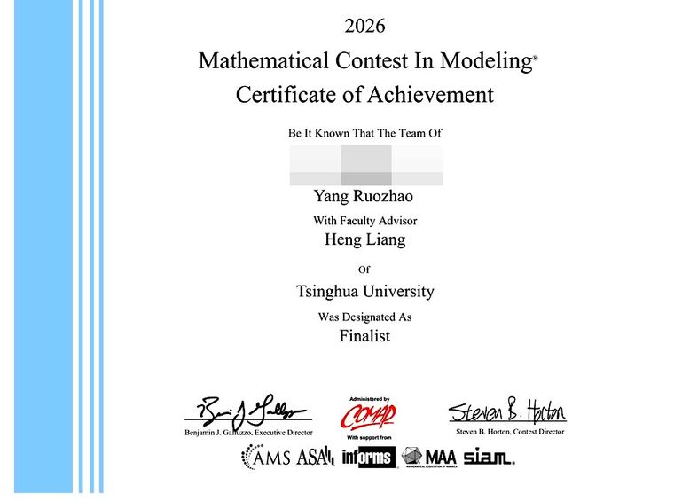
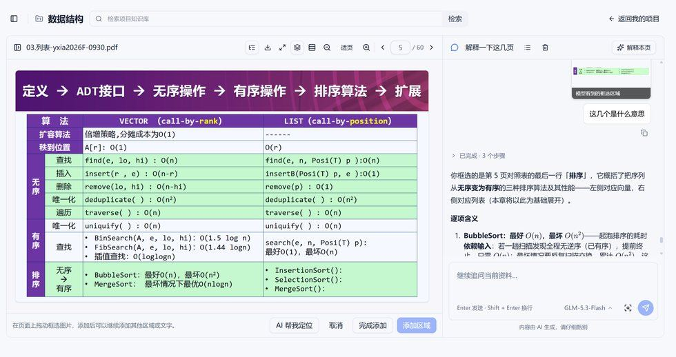
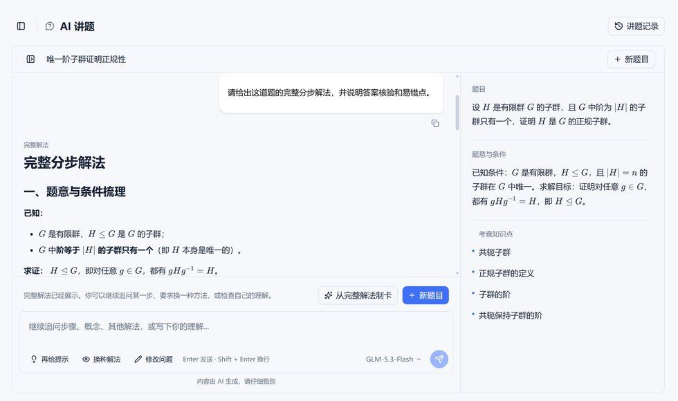

课程与成绩
- 数理与计算机：高等线性代数 A+、离散数学 A+、数学分析 A、初等数论 A、基础物理学 A-、面向对象程序设计 A-、Python 程序设计进阶 A-
- 在修与旁听：数值分析、抽象代数、形式语言与自动机、数据结构、计算机组成原理、计算机网络、计算机系统结构、人工智能导论、计算机系统概论
- 学分与绩点：71 学分，GPA 3.974 / 4.000，除一门通识课和军事技能外全部满绩
- 工具：Python、C++、Linux、Git；PyTorch、TensorFlow、NumPy、Pandas、Matplotlib；日常用 Codex 等 AI 编程助手做开发
竞赛与奖项

2026 年美国大学生数学建模竞赛 MCM/ICM 与队友合作获 Finalist 奖，属国际赛事；奖状中两位队友姓名已作遮蔽处理。
- 智理杯智能体大赛 · 智理之星 · 队长，获奖项目为知序 · 2026.09
- 未央城智能体大赛 · 二等奖第一名 · 队员，开发选课助手 Agent · 2026.04
- 清华大学智能体大赛 deepclue 赛道第八名、antwar 赛道第 32 名 · 2026.05
- 数理基础大赛 26 春二等奖与特别奖、25 秋三等奖第一名 · 2026.04 / 2025.10
- 灵境创想新生 VR/AR 大赛三等奖 · 队长，Unity 与 ESP32 软硬件交互 · 2025.12
- 拓竹杯软件设计大赛 · 队长，Web 端二手书交易网站 · 2026.02
科研
SRT：核反应堆多物理场耦合的先进数值计算方法及人工智能的应用
2025.09 至今 · 核能与新能源技术研究院 · 指导教师 张汉 · 独立完成建模、编程与写作
课题核心是用神经网络求解偏微分方程：将待求解表示为网络，以方程残差与边界初值条件构造损失，借助自动微分对自变量求导，把求解改写为无网格优化。
- 用 PyTorch 实现一维中子扩散方程正向求解器，与解析解和有限差分交叉验证；再做参数反演，由解场反推吸收系数
- 定位到强吸收条件下网络收敛至零解的失败模式，分析其与渐近外解的物理对应；改用硬边界约束构造 u = (1 − ξ2) · NN(ξ)，将边界条件内嵌于网络结构，从构造上消除该失败
2026 年 1 月与 7 月两次协助机械工程系研究生开展实验，参与低频发射源跨介质定位实验、面向机器鱼的水空跨介质定位与交互实验的搭建与数据采集。
项目与产品
含项目资料管理、文档阅读、AI 问答与讲题、笔记、知识卡片、学习社区六个模块，前后端与部署独立完成，已服务 80 余位用户。


左：框选课件页面区域直接提问，回答附可点回的原文位置；右：讲题给出完整分步解法与考查知识点
- 技术主线为检索增强生成：课件与论文先做版面解析与分块，经 embedding 向量化建库，提问时检索最相关片段连同出处一并交给模型
- 质量与成本并行控制：分块长度、召回条数、是否重排、上下文 token 数逐项试值；用户反馈整理为评测样例，每次改动先跑一遍再上线；模型按任务分档调用
- 开发过程使用 AI 编程助手，架构取舍、代码审查与调试结论由本人把关，生成内容逐段复核并运行验证
- 上线合规流程独立完成：注册北京知汇云创网络科技中心（个体工商户），以算法安全责任人身份完成公安联网备案、安全评估申报与算法备案材料填报
文艺
- 科普《时间的长河：怀尔斯与费马大定理的 358 年》获校科协与学生写作协会"讲好科学的故事"写作比赛三等奖，以获奖文章形式发表于清华青年科创
- 散文《红门》投稿 2026 清华大学朱自清文学奖，获初评委书面评语，未进入复评
社工与公益
- 未央 53 班学习委员：承担校、系、班三级信息对接，组织线性代数期中小班辅导并担任主讲，参与编写辅导讲义，承办从游坊活动，组织每周一题
- 未央书院学生会学习部委员：2026 年 3 月起任第四届学生会学习部委员，参与书院学习活动的策划组织与学风建设
- 未央书院答疑坊志愿者：2026 年 4 月起为同学提供学业答疑，第十期值守 13 小时
- 清华大学大数据智能讲堂第 8、9 期志愿者：讲堂由软件学院承办，负责讲座组织与现场协调
- 朋辈支援与信件交流：参加清音入瓦、笔落呼兰、清信同行、探育微书等项目，为三所中学的高三学生回信，志愿服务累计 30.5 小时
- 社会实践：2026 年 8 月参加"人本智能 · 智慧物流"深圳实践，任宣传组，负责记录与撰稿，走访大潮起珠江广东改革开放 40 周年展览、大亚湾核电站、华为展厅等站点，并在图书馆承担讲解
- 荣誉：2025 年秋季学期未央 53 班优秀团员
近况
- 未央书院综合优秀奖答辩演示稿以单文件 HTML 实现并开源
- 知序参加智理杯智能体大赛获智理之星；完成公安联网备案与安全评估申报
- 参加"人本智能 · 智慧物流"深圳社会实践，任宣传组，负责记录与撰稿
- 协助机械系开展面向机器鱼的水空跨介质定位与交互实验